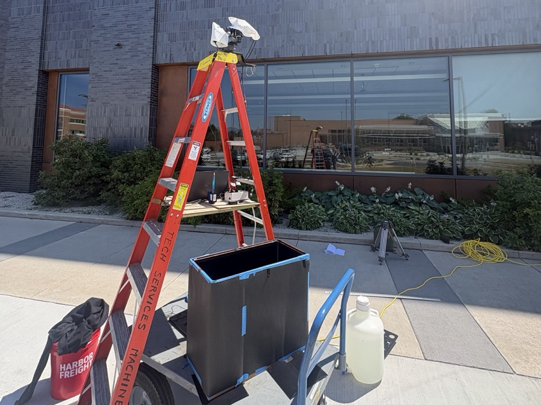
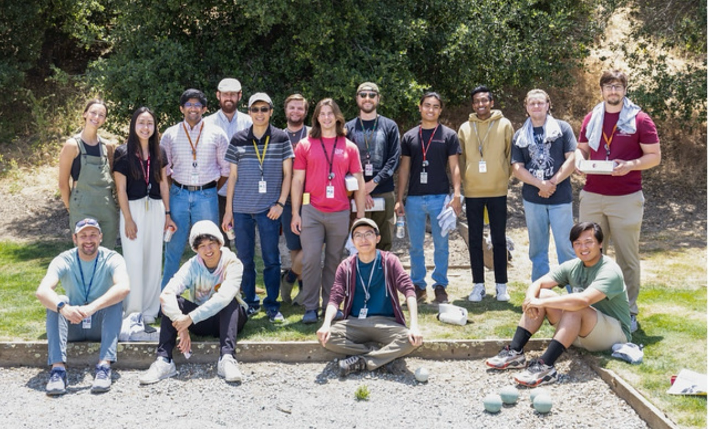
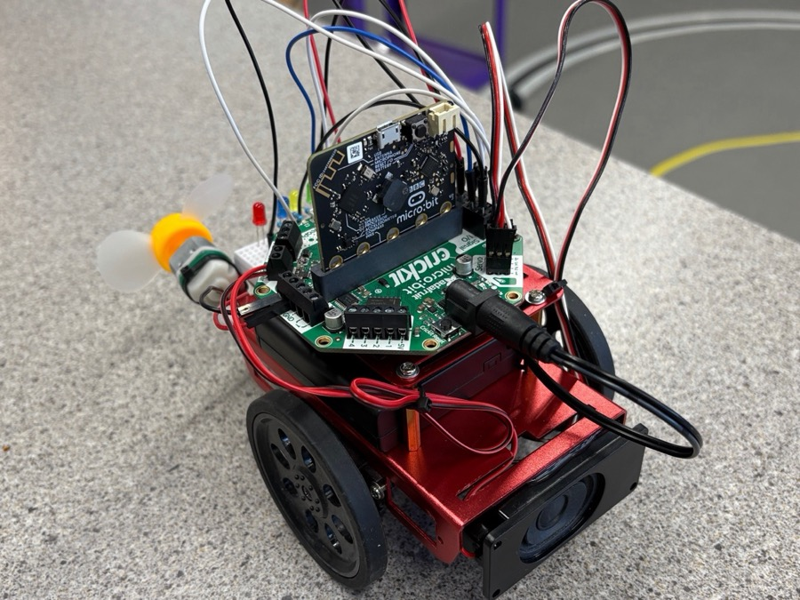
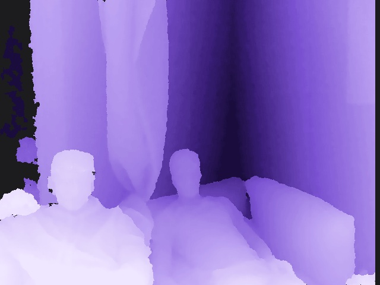
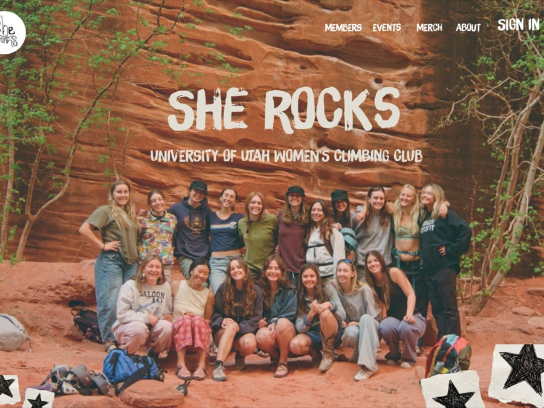
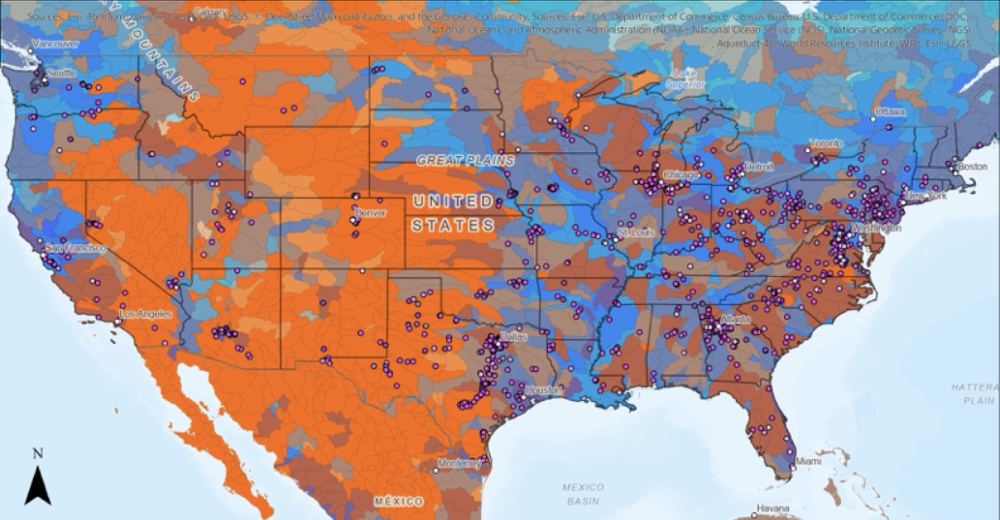

Projects
Internships & Research
Remote Sensing at ECE MSU

A lab-built river ecosystem for testing a hyperspectral imager.
Moran Eye Center

Predicting what retinal neurons will do from what they see.
SLAC Software Engineer & Controls Intern

Modernizing software for particle accelerator operators and users.
Robotics TA

Building robots, writing code, and teaching 20 students to do the same.
Personal Projects
LiCam - Capstone Project

A pocket-sized depth camera that turns the physical shape of a scene into stylized art.
She Rocks website & Club lead

A production platform that runs sign-ups, scheduling, and admin for a 150-member climbing club.
GIS and Water stress personal research

Mapping where U.S. data centers sit relative to water stress and social vulnerability.